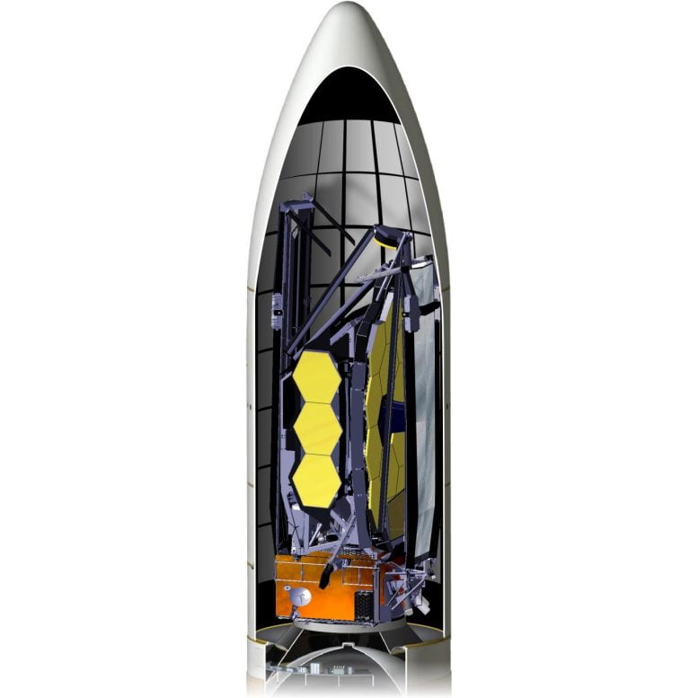
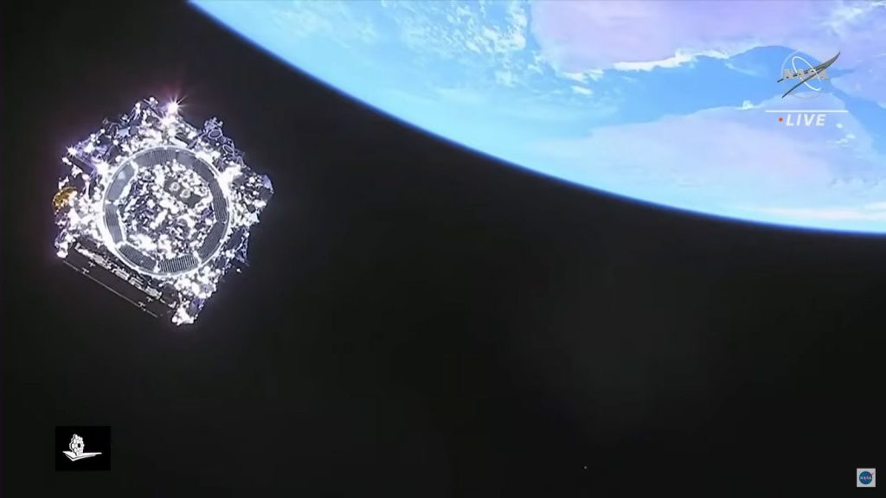

ဒီ တယ်လီစကုပ် ကြီးရဲ့ အလင်းပြန် မှန် တစ်ခုလုံးရဲ့ အကျယ်ဟာ ၂၁ ပေ ကျယ်ပါတယ်။ သူ့ကို အလင်းပြန်အား ကောင်းကောင် ရွေနဲ့ အုပ်ထားတာပါ။ ဒါဟာ ဒီ တယ်လီစကုပ်ကြီးရဲ့ ကိရိယာတွေကို နေရာချ မှုမှာ နောက်ဆုံး အဆင့် ဖြစ်ပါတယ်။ (နေရာ အခက်အခဲကြောင့် လွှတ်တင်စဉ်မှာ ဒုံးပျံထိပ်ဖူးထဲ ခေါက်ပြီး သယ်သွားတာပါ။)

ဒီ တယ်လီစကုပ် ကြီးဟာ နေအဖွဲ့အစည်း အတွင်းက ဂြိုဟ်သိမ် ဂြိုဟ်မွှား တွေကစလို့ ကမ္ဘာကနေ မြင်နိုင်တဲ့ စကြာဝဠာရဲ့ အစွန်ဆုံးက ဂလက်ဆီ တွေအထိ လေ့လာ နိုင်မှာ ဖြစ်ပါတယ်။
“ဒီနေ့မှာ နာဆာ အဖွဲ့ကြီးဟာ ဆယ်စုနှစ် ပေါင်းများစွာ ကြိုးပမ်းအားထုတ်မှုရဲ့ ရလဒ်အဖြစ် အင်ဂျင်နီယာ နည်းပညာ ဆိုင်ရာ အောင်မြင်မှုကြီး တစ်ခုကို ရရှိ ခဲ့ပါတယ်။” လို့ နာဆာ အဖွဲ့ကြီးရဲ့ အကြီအကဲ ဖြစ်သူ ဘီလ် နယ်လ်ဆန် (Bill Nelson) က ပြောပါတယ်။

(မြန်မာ့ သိပ္ပံ (Myanmar Scientist) မှ ဆောင်းပါးများကို ခွင့်ပြုချက် မရရှိပဲ ပြန်လည် ကူးယူ ဖေါ်ပြခြင်း မပြုပါရန် လေးစားစွာ ပန်ကြား အပ်ပါသည်။)အခြား အစိတ်အပိုင်း တွေ အားလုံး နေသား တကျ နေရာချပြီးတဲ့ အခါမှာတော့ ပင်မ ကြေးမုံကို စတင် နေရာ ချထားပါတယ်။ ၆ မြှောင့်ပုံ (ဆဌဂံပုံ) ရှိတဲ့ ဒီ ပင်မမှန်ကို နေရာချတာက တစ်ရက်ထဲနဲ့ ပြီးသွားတဲ့ အလုပ်တော့ မဟုတ်ပါဘူး။
မြန်မာ့သိပ္ပံ မိသားစု
ဇန်နဝါရီ ရ ရက် နေ့မှာ ပင်မကြေးမုံရဲ့ တစ်ခြမ်းကို အရင် နေရာချထားပါတယ်။ ဇန်နဝါရီ ၈ ရက်နေ့ကတော့ ကျန်တဲ့ ကြေးမုံတစ်ခြမ်းကို ဆက်လက် နေရာ ချထားပါတယ်။ ဒီ နေရာ ချထားမှုဟာ မနက် ၈ နာရီ ၅၃ မိနစ်ကနေ စတင် လုပ်ဆောင်တာ ဖြစ်ပြီး နေ့လည် ၁ နာရီ ၁၇ မိနစ် အချိန်မှာ အောင်မြင်စွာ ပြီးဆုံးခဲ့ပါတယ်။

ဒီ အဆင့်မှာတော့ မှန်ချပ် တစ်ချပ်ချင်းစီရဲ့ နောက်မှာရှိတဲ့ မောင်းတံလေးတွေကို အသုံးပြုပြီး မှန်ချပ် တစ်ချပ်ချင်းစီကို လိုအပ်တဲ့ အနေအထား အတိုင်း ခုံးခုံးလေး ဖြစ်အောင် ချိန်ညှိကြရမှာ ဖြစ်ပါတယ်။
မှန်ချပ်လေး တစ်ချပ်စီရဲ့ နောက်မှာ မောင်းတံ အသေးလေး ၇ ခုစီ ပါဝင်ပါတယ်။ (စုစုပေါင်း မောင်းတံ ၁၂၆ ခုတောင် ပါပါတယ်။) ဒီ မောင်းတံတွေကို အသုံးပြုပြီး ကြေးမုံရဲ့ မျက်နှာပြင်က အလင်းပြန်တာကို လိုအပ်တဲ့ အနေအထား ရအောင် အသေးစိတ် ချိန်ညှိ ရတာပါ။ ဒီ အလုပ်က အလွန် လက်ဝင်တဲ့ လုပ်ငန်းစဉ် ဖြစ်ပါတယ်။ ကြေးမုံချပ်တွေ အားလုံး အောင်အောင်မြင်မြင် ချိန်သားကိုက်အောင် ချိန်ညှိတဲ့ လုပ်ငန်းစဉ်ဟာ အချိန် လ နဲ့ချီပြီး ကြာမြင့်မှာ ဖြစ်ပါတယ်။

ဒီလို ကြေးမုံ မှန်ချပ် လေးတွေကို ချိန်ညှိမှုတွေ ပြုလုပ်နေတဲ့ မရှေးမနှောင်း မှာပဲ ဂျိမ်းစ်ဝက်ဘ် တယ်လီစကုပ် ကြီးဟာ သူ့ရဲ့ နောက်ဆုံး ပတ်လမ်းကို သွားမယ့် ခရီးရှည်ကို စတင်မှာ ဖြစ်ပါတယ်။ ကမ္ဘာကနေ မိုင် တစ်သန်းလောက် အကွာမှာ ရှိတဲ့ လာဂရန် အမှတ် ၂ (Lagrange point L2) ကို အရောက်သွားဖို့ သူ့ရဲ့ ဒုံးစက်တွေကို တတိယ အကြိမ် စက်နှိုးတော့မှာ ဖြစ်ပါတယ်။
ဒီ လာဂရန် အမှတ် ၂ နေရာမှာ နေက လာတဲ့ အလင်းရောင်တွေကို ကမ္ဘာနဲ့ လရဲ့ အရိပ်မှာ ခိုပြီး အကာအကွယ် ယူမှာ ဖြစ်ပါတယ်။ ဒါ့အပြင် သူ့ရဲ့ နေရောင်ကာ ထီးပြားတွေကလဲ နေရဲ့ အပူရှိန် ကနေ အကာအကွယ် ပေးထားမှာ ဖြစ်ပါတယ်။

ဂျိမ်းစ်ဝက်ဘ် တယ်လီစကုပ်နှင့် ပတ်သက်ပြီး အသေးစိတ် ဖတ်ရှုရန် – ဂျိမ်းစ်ဝက်ဘ် တယ်လီစကုပ်ကြီး အောင်မြင်စွာ လွှတ်တင်
နာဆာရဲ့ အခု ဂျိမ်းစ်ဝက် စီမံကိန်း ဒါရိုက်တာ ဂရီဂိုရီ ရော်ဘင်ဆန် (Gregory L. Robinson) ကတော့ အခုလို ပြောပါတယ်။

— သက်နိုင် (မြန်မာ့သိပ္ပံ) —
Reference: NASA’s Webb Telescope Reaches Major Milestone as Mirror Unfolds | NASA